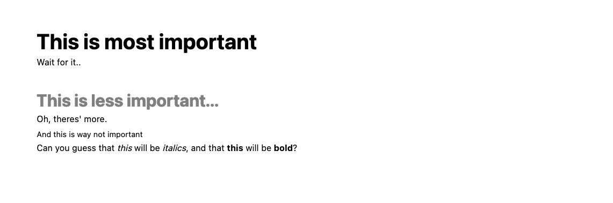
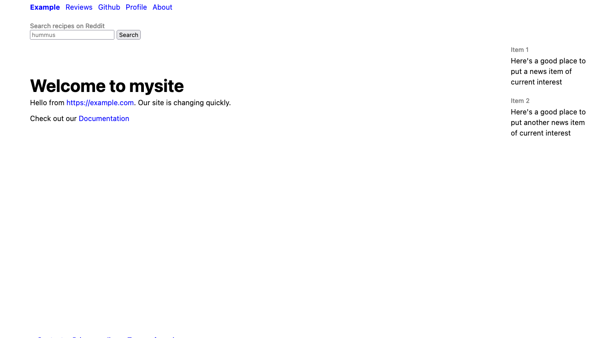
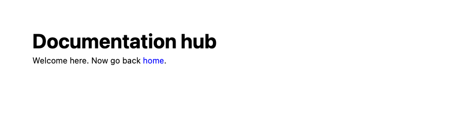

Creating and linking to pages
So. It's time to start creating the pages for your site. Let's first learn how Markdown works. If you're accustomed to Markdown feel free to skip this section.
Why Markdown?
If you load up the index.md file in a site you've
created, you'll
see something along these lines:
# Welcome to mysite
hello, world.
Learn more at [PocoCMS tutorials](https://pococms.com/docs/tutorials.html)
A few quick Markdown samples
It's sort of easy to figure out roughly how this document will render as HTML (but if not, don't worry because all this and more will be explained in this tutorial).
# This is most important
Wait for it..
## This is less important...
Oh, theres' more.
###### And this is way not important
Can you guess that *this* will be *italics*,
and that **this** will be **bold**?
Depending on the theme, it renders with the decorated text showing different formats:

Markdown has semantic importance
HTML is designed to structure your documents so that readers (including screen readers for visually compromised people) can get a feel for how important the parts of a document are by their formatting. Browsers use HTML to determine page formatting, along with stylesheets, many of which are provided by the PocoCMS theme framework to get you started.
The heading at the top of this page looks like this in its original Markdown file:
# Creating and linking to pages
The # part translates to an HTML <h1> tag.
The tags from <h1> to<h6> are called headings.
<h1> is given the greatest weight, an <h6> the least.
Most search engines don't even bother with
<h4> through <h6>.
At any rate the title above appears in the finished document
as <h1>Creating and linking to pages</h1>.
As you can imagine, the subtitle
### A few quick Markdown samples on this page gets rendered
as a level 3 heading: <h3>A few quick Markdown samples</h3>
Now let's start creating pages and writing some Markdown.
Creating a new page
- From your site's root directory,
drop into your command shell and create a subdirectory
called
docs:
mkdir docs
- Create the file
docs/index.mdwith these contents:
# Documentation hub
Welcome here. Now go back [home](/).
So we have a new page one subdirectory down. Let's link to it from the home page.
Creating Links
- Edit the
index.mdin your root directory to include this line:
Check out our [Documentation](docs/index.html)
- Run poco again to rebuild the site:
poco
The home page should link to the new subdirectory:

- Click the link you just added, and you should connect to the new page:

Markdown link format
Based on these observations, let's expand our definition of link formatting in Markdown:
- a link is in the format
[Anchor text](url), where[Anchor text]is anything you want to put there, surrounded by[and], also called square brackets. It's the visible part of the link, formally known as anchor text in the HTML world. - The second part of the link immediately follows the square brackets.
No space is allowed or it won't be interpreted as a link. It's the
part in
(and)parentheses. That's the target of the link. It could be another website, such as[Google](https://google.com) - You can easily indicate a subdirectory below the current one
by giving its name, followed by a slash:
[Documentation](docs/index.html) - If you want to indicate the home page, just use a slash by itself:
[home](/) - If you're in a subdirectory you can actually open a file in the directory above it like this:
[home](../index.html)
Also there's a shortcut. If the file in the subdirectory above is index.html, you can omit the filename:
[home](..)
- You can even link to a named place inside a document if it's been marked
in the original HTML. To look to the word
Markdownin the PocoCMS glossary you'd write a link this way:
[Markdown defined](https://pococms.com/docs/glossary.html#markdown)`
- To link to a place inside the same document, just us the
#. For example, this will link theWhy Markdownheading in this page:[Why Markdown](#why-markdown)would therefore link to Why Markdown.